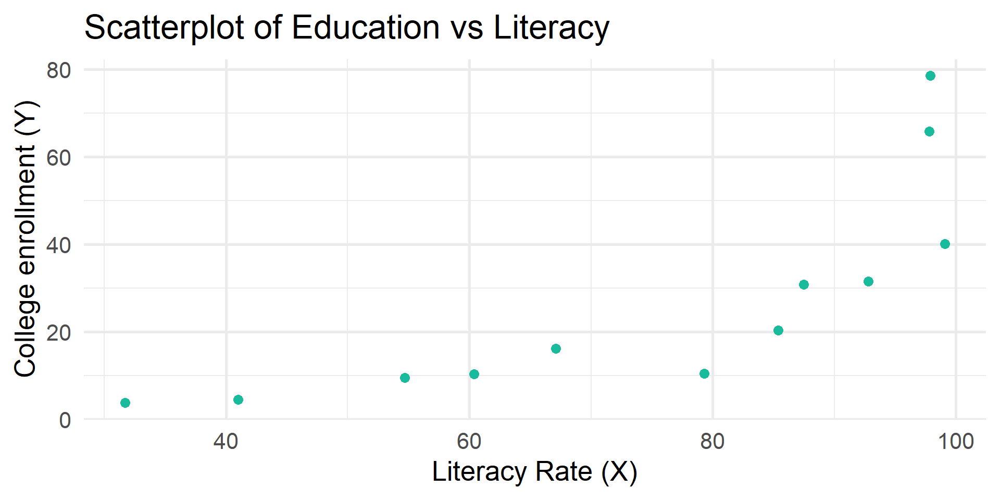
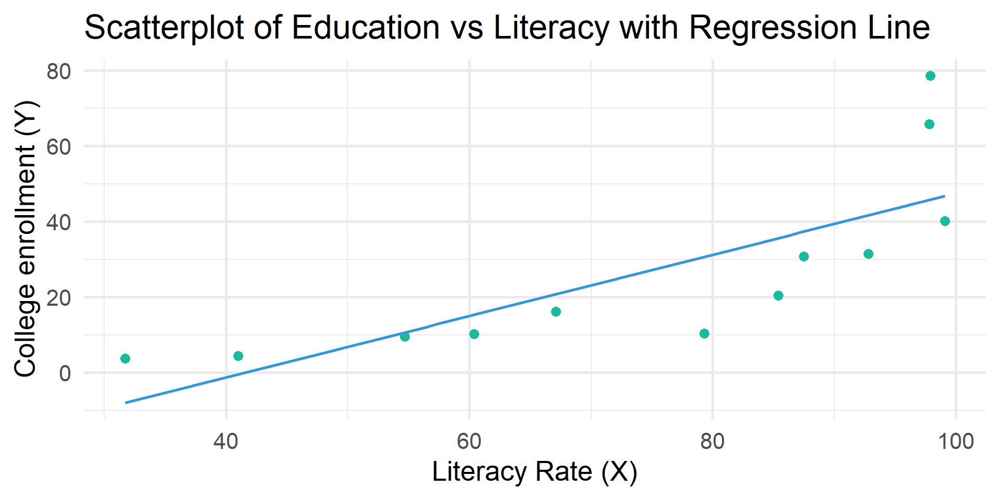
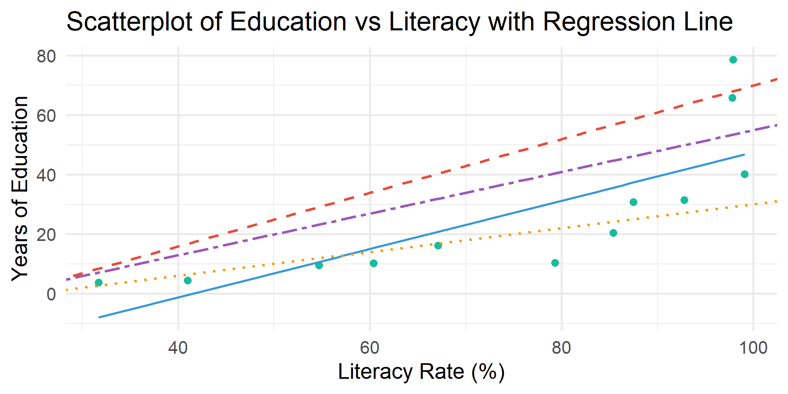
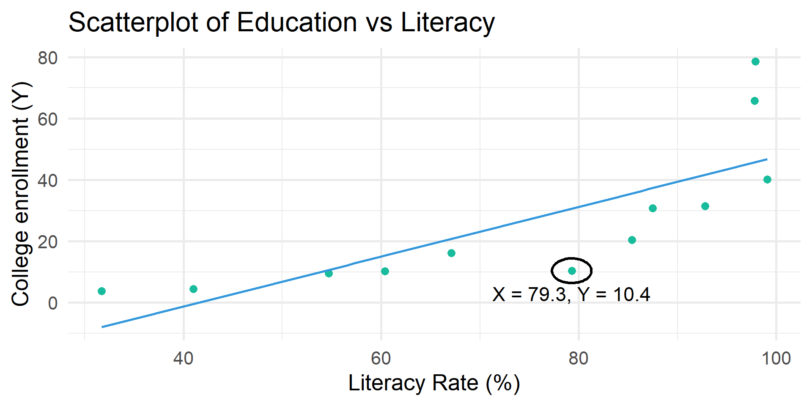
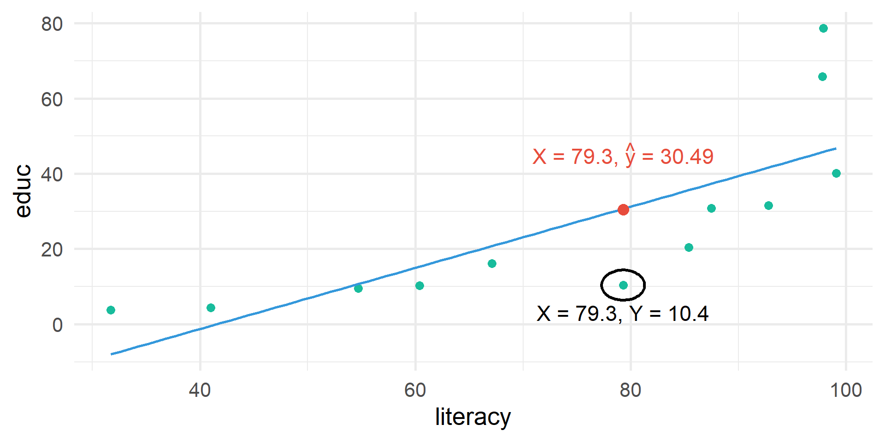
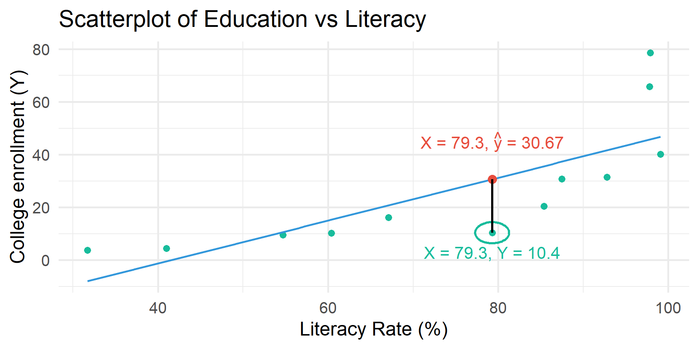
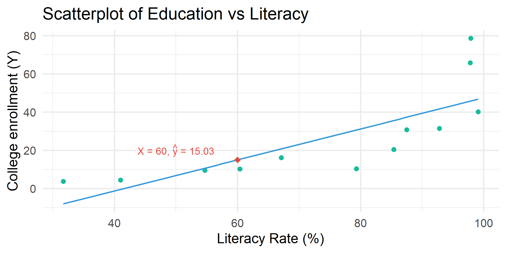

By the end of the lecture, you will be able to …
Download and open code-along-08.qmd
Load the standard packages & new package moderndrive
Regression and correlation are ways to identify whether two interval-ratio variables are statistically dependent
as the value of one variable changes, the other also tends to change
What is the relationship between literacy rate and rate of tertiary education?
literacy rate
% of adult population that is literate
rate of tertiary education
the % of students enrolled/eligible within the age range
literacy educ
1 31.7 3.74
2 79.3 10.40
3 85.4 20.40
4 41.0 4.46
5 54.7 9.53
6 97.9 78.60
7 92.8 31.50
8 67.1 16.20
9 97.8 65.80
10 60.4 10.30
11 87.5 30.80
12 99.1 40.10tidy_summary()moderndive::tidy_summary() returns commonly used summary statistics in a tidy format.
# A tibble: 2 × 11
column n group type min Q1 mean median Q3 max sd
<chr> <int> <chr> <chr> <dbl> <dbl> <dbl> <dbl> <dbl> <dbl> <dbl>
1 literacy 12 <NA> numeric 31.7 59.0 74.6 82.4 94.0 99.1 23.2
2 educ 12 <NA> numeric 3.74 10.1 26.8 18.3 33.6 78.6 24.2
Linear relationship
When two interval-ratio level variables are related to one another we can approximate the relationship by drawing a straight line through the center of the observations on the scatterplot.
A bivariate regression analysis finds the best possible line to summarize the observed relationship between X and Y
# Create scatterplot with regression line
df |>
ggplot(aes(x = literacy, y = educ)) +
geom_point(color = "#18BC9C", size = 3) +
geom_smooth(method = "lm", se = FALSE, color = "#3498DB") +
labs(
title = "Scatterplot of Education vs Literacy with Regression Line",
x = "Literacy Rate (%)",
y = "College enrollment (Y)"
) +
theme_minimal(20)
\(\hat{y} = a + bX\)
\(\hat{y}\) = the predicted score on the dependent variable
\(X\) = the score on the independent variable
\(a\) = the Y-intercept, or the point where the line crosses the Y-axis (\(a\) is the value of \(Y\) when \(X\) is equal to 0).
\(b\) = the slope of the regression line, or the change in \(Y\) for each unit of change in \(X\).
\(\hat{y} = a + bX\)
Positive relationship
When \(b\) is positive, then when \(X\) increases, \(\hat{y}\) increases
Negative relationship
When \(b\) is negative, then when \(X\) increases, \(\hat{y}\) decreases

\(\hat{y} = a + bX\)
Regression finds the best fitting line that goes through the data with the least distance (error) between all points and the line.
AKA the “least squares line” referring to the least amount of squared error.
Calculated based on the difference between \(Y\) and \(\hat{y}\)
\(Y\) = observed value of \(Y\) for given value of \(X\)
\(\hat{y}\) = predicted value of \(Y\) for given value of \(X\)



| literacy | educ | educ_hat | residual |
|---|---|---|---|
| 31.7 | 3.74 | -7.995 | 11.735 |
| 79.3 | 10.40 | 30.671 | -20.271 |
| 85.4 | 20.40 | 35.626 | -15.226 |
| 41.0 | 4.46 | -0.440 | 4.900 |
| 54.7 | 9.53 | 10.688 | -1.158 |
| 97.9 | 78.60 | 45.780 | 32.820 |
\(\hat{y} = a + bX\)
Least-squares line
The line where the residual sum of squares is at a minimum
Ordinary least-squares (OLS) regression
The statistical technique that produces the least-squares line Sometimes referred to as linear regression
\(\hat{y} = a + bX\)
Calculus demonstrates the formula for \(b\) and \(a\) will result in a regression line that minimizes the sum of squares.
Run a regression model.
Call:
lm(formula = educ ~ literacy, data = df)
Coefficients:
(Intercept) literacy
-33.7449 0.8123 \(\hat{y} = -33.75 + .81X\)
\(\hat{y} = -33.75 + .81X\)
When the literacy rate in a country is 0, the college enrollment rate is predicted to be -33.57 (\(a\))
For every one unit increase in the literacy rate, the college enrollment rate is expected to rise by 0.81 (\(b\))
Is this statistically significant?
cor.test() Run and interpret the correlation for educ and literacy.
Pearson's product-moment correlation
data: educ and literacy
t = 3.942, df = 10, p-value = 0.002766
alternative hypothesis: true correlation is not equal to 0
95 percent confidence interval:
0.3731885 0.9352545
sample estimates:
cor
0.7800287 get_regression_table()# A tibble: 2 × 7
term estimate std_error statistic p_value lower_ci upper_ci
<chr> <dbl> <dbl> <dbl> <dbl> <dbl> <dbl>
1 intercept -33.7 16.0 -2.10 0.062 -69.5 1.98
2 literacy 0.812 0.206 3.94 0.003 0.353 1.27statistic Test whether the coefficient is different from 0. Get the t-values by dividing the estimate by its standard error.
p-value Two-tail p-values for the test statistic
\(\hat{y} = -33.75 + .81X\)
A regression equation can also be used to create predicted Y values for each value of X
If X = 60, \(Y\) is predicted to be:
\(\hat{y} = -33.75 + .81(60)\)
\(\hat{y} = -33.75 + 48.6\)
\(\hat{y} = 15.03\)

# Use mutate and case_when to add the country_group column
df <- df %>%
mutate(country_group = case_when(
literacy < 50 ~ "Low Literacy",
literacy >= 50 & literacy <= 80 ~ "Medium Literacy",
literacy > 80 ~ "High Literacy"
))
head(df) literacy educ country_group
1 31.7 3.74 Low Literacy
2 79.3 10.40 Medium Literacy
3 85.4 20.40 High Literacy
4 41.0 4.46 Low Literacy
5 54.7 9.53 Medium Literacy
6 97.9 78.60 High Literacyget_regression_table()# A tibble: 3 × 7
term estimate std_error statistic p_value lower_ci upper_ci
<chr> <dbl> <dbl> <dbl> <dbl> <dbl> <dbl>
1 intercept 44.5 6.94 6.42 0 28.8 60.2
2 country_group: Low Lit… -40.4 13.9 -2.91 0.017 -71.8 -9.03
3 country_group: Medium … -32.9 11.0 -3 0.015 -57.8 -8.10The better a least-squares line is, the better it can predict an outcome with the least amount of error
\(r^2\) is a proportional reduction of error (PRE) measure
\(PRE = \frac{E1 - E2}{E1}\)
It tells us how well the regression model fits the data
\(PRE = \frac{E1 - E2}{E1}\)
E1
Errors of prediction made when IV is ignored
Equivalent to the sum of errors we would have if we guessed that every Y was equal to the mean of Y
aka Sum of Squares Total (SST)
E2
Errors of prediction made based on IV
Equivalent to the sum of errors we would have if we used our least squares line to predict Y
aka Sum of Squared Errors (SSE)
Use get_regression_points() to see the residuals.
# A tibble: 12 × 5
ID educ literacy educ_hat residual
<int> <dbl> <dbl> <dbl> <dbl>
1 1 3.74 31.7 -8.00 11.7
2 2 10.4 79.3 30.7 -20.3
3 3 20.4 85.4 35.6 -15.2
4 4 4.46 41 -0.44 4.9
5 5 9.53 54.7 10.7 -1.16
6 6 78.6 97.9 45.8 32.8
7 7 31.5 92.8 41.6 -10.1
8 8 16.2 67.1 20.8 -4.56
9 9 65.8 97.8 45.7 20.1
10 10 10.3 60.4 15.3 -5.02
11 11 30.8 87.5 37.3 -6.53
12 12 40.1 99.1 46.8 -6.65\(R^2\) ranges from 0 to 1.0
1.0 = Our independent variable accounts for all the variation that we find in the dependent variable (it predicts the dependent variable perfectly).
0.0 = Our independent variable does not improve our ability to predict the dependent variable.
In the social sciences, a high \(R^2\) is rare!
Use get_regression_summaries() to see \(R^2\).
# A tibble: 1 × 9
r_squared adj_r_squared mse rmse sigma statistic p_value df nobs
<dbl> <dbl> <dbl> <dbl> <dbl> <dbl> <dbl> <dbl> <dbl>
1 0.608 0.569 210. 14.5 15.9 15.5 0.003 1 12\(R^2\) shows the amount of variance of the DV is explained by IV(s).
An \(R^2\) of \(0.61\) means that knowing the literacy rate of a country reduces our error in predicting college enrollment by 61%.
The national literacy rate explains 61% of variation in college enrollment.
1. Run and interpret a simple regression using with your IPUMS data
2. Run and interpret a regression with a categorical IV and your DV using your IPUMS data